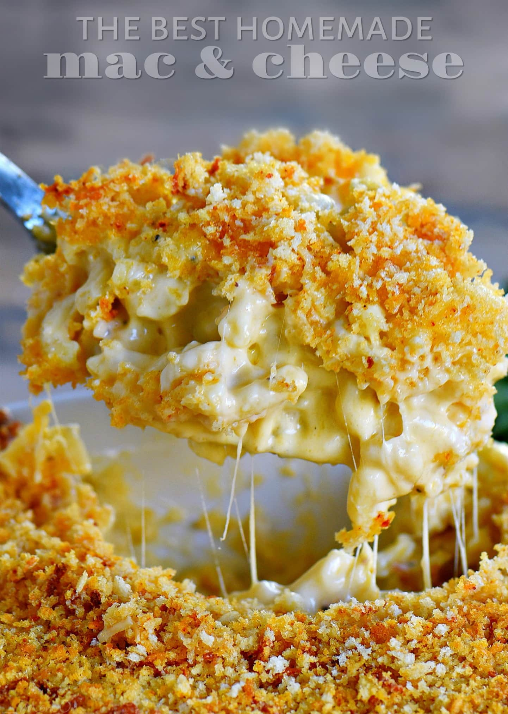

Mac n Cheese

Description:
MacnCheese also called macaroni and cheese in many places-is a dish of cooked macaroni pasta and a cheese sauce.
Ingredients
- 2 1/2 lb. dried elbow pasta
- 1 cup unsalted butter
- 1 cup of whole milk
- 1/2 cup of all purpose flour
- 2 cups of half and half
- 4 cups of grated cheese
- 1/2 tbsp of salt, pepper, and paprika
Instructions
- cook them thangs
- once done, eat them thangs